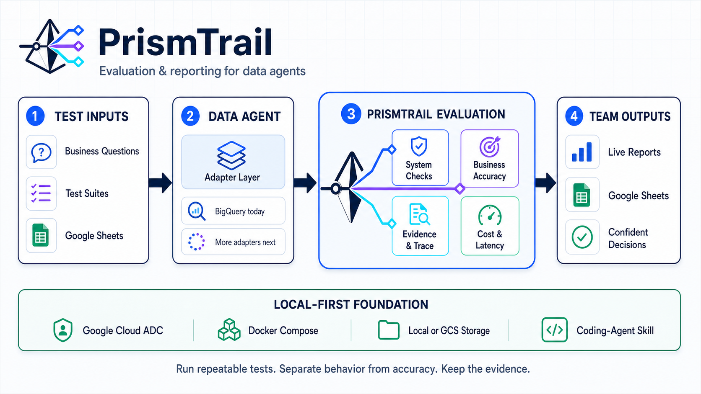

チーム向けユーザーマニュアル
はじめての評価フロー
Data Agent の登録から、テストケース作成・実行・レポート確認までを 1通り回すための手順書です。初回オンボーディングや社内展開に使えます。
事前準備
このマニュアルはアプリ起動後の操作に焦点を当てます。 起動自体は管理者またはセットアップ担当が完了している前提です。
開始前に手元にあるもの
- PrismTrail の URL（既定:
http://127.0.0.1:4318） - 評価対象の Data Agent リソース名
例:projects/<project>/locations/global/dataAgents/<id> - （任意）チーム共有用 Google スプレッドシート URL
- （任意）検証したい業務質問と、期待する正解値・期間・単位
実行すると BigQuery 利用料金が発生することがあります。 Data Agent・BigQuery・Vertex AI（精度判定）への権限が ADC に付与されている必要があります。 本番データで試す場合は、課金と影響範囲を事前に確認してください。
評価の考え方
PrismTrail は「動いたか」と「答えが正しいか」を分けて評価します。 ケース設計時はこの2層を意識すると、失敗時の切り分けが速くなります。
システム要件（動作チェック）
決定論的に合否判定
- 最終回答が返ったか / エラーなく完了したか
- SQL の生成・実行
- チャート生成
- 最大実行時間・最大課金量
- 回答に含める必須語句
ビジネス要件（精度チェック）
Gemini が A〜D で採点
- 期待値・期間・単位・許容差を自然言語で記述
- 既定の合格ラインは B以上
- 検証可能な期待値がない場合は OFF のままにする

まずシステム要件だけ（例: SQL必須・時間上限）でスモークケースを1件作り、 接続と実行が通ることを確認してから、ビジネス要件を足していくと安全です。
画面マップ
左サイドバーから主要画面へ移動します。今回の基本フローで使う画面は次のとおりです。
1Agentを登録する
PrismTrail は Data Agent を新規作成しません。 Google Cloud 上に既にある Agent を、評価対象として登録します。
- サイドバーで データエージェント を開く 画面説明「Google Cloud上の既存Data Agentを、テスト対象として安全に登録します。」が表示されます。
- 右上の Agentを登録 を押す 「Data Agentを登録」モーダルが開きます。
-
必須項目を入力して 登録する
- 表示名
- チーム内で分かる名前（例: 売上分析エージェント）
- リソース名
projects/.../locations/.../dataAgents/...形式の完全名- 説明
- 任意。用途メモなど
- 一覧の 接続確認 を押す 成功すると「接続を確認しました。BigQueryクエリは実行していません。」と表示されます。 ここでは課金クエリは走りません。
「Data Agent resource nameの形式が正しくありません。」と出る場合は、 プロジェクト / ロケーション / dataAgents ID の抜け・余分な空白を確認してください。
2テストケースを登録する
評価単位は「テストスイート」です。スイートの中に複数ケースを持ち、 一括実行とレポートの対象になります。
2-1. スイートを作る
- テストスイート を開き、新しいスイート を押す 「新しいテストスイート」が作成され、編集画面へ遷移します。
-
タブ 基本情報 を埋める
- スイート名 … 目的が分かる名前
- 接続先Data Agent … 既定は「ケースごとに選択」。スイート共通でも可
- 目的・説明 … 何を守る回帰か
2-2. ケースを追加する
タブ テストケース へ移動します。初回は次のいずれかで追加できます。
1件ずつ追加（おすすめ・初回）
1件ずつ追加 または ケースを追加 でフォーム入力。
表で一括追加
表で入力する / 表を貼り付けて一括編集 で Sheets・Excel から貼り付け。
2-3. ケースフォームの要点
- テストケース名
- 一覧で識別できる短い名前
- 検証プロンプト
- Agent に投げる質問文。対象テーブルや期間を明示すると安定します
- 対象Data Agent
- 手順1で登録した Agent を選択
- 思考モード
FAST/THINKING- ステータス
- 実行可 または 下書き。下書きは実行時にスキップされます。新規追加の既定は下書きです
- システム要件
- SQL必須・チャート・時間上限・課金上限・必須語句など
- ビジネス要件
- 「AIで回答精度を判定」をONにし、期待する正解・判定条件を自然言語で記述
ビジネス要件の書き方例
2026年6月の求人応募数は65,200件。
期間・数値・単位が一致すること。許容差は±1%まで。期待値がまだない場合はビジネス要件をOFFのままにし、システム要件だけでスモークしてください。 存在しない正解値を書いて採点させないでください。
- ステータスを 実行可 にする 下書きのままではスイート実行対象になりません。
- 右上の 保存 を押す 編集内容を確定してから実行します。
Google Sheets 連携の管理タブはスイートあたり最大50ケースです。まずは少数（1〜3件）で通し、広げてください。
3スイートを実行する
実行可のケースが1件以上ある状態で、一括評価を開始します。
-
実行を開始する
次のどちらかです。
- 編集画面右上の スイートを実行
- スイート一覧カードの 一括実行
- 確認ダイアログで続行する 「BigQuery利用料金が発生する可能性があります」と表示されます。 下書きがある場合は、実行可件数とスキップ件数が併記されます。
-
ライブレポートへ遷移する
開始直後に評価レポート詳細へ移動し、ケース進捗が自動更新されます。
各ケースはおおむね次の順で進みます。
- Data Agentを実行中
- システム要件を確認中
- Geminiで回答精度を判定中（ビジネス要件ON時）
「ケースを1件以上登録してください。」や 「実行可のテストケースがありません。」と出る場合は、 ケース追加とステータス（実行可）を見直してください。
4レポートを確認する
実行結果は 評価レポート に蓄積されます。 実行中画面から離れても、一覧から同じレポートを開き直せます。
一覧で見る
列: 実行ログ / 結果 / 合格率 / 合格ケース / 所要時間 / 課金量
詳細で見るポイント
- 総合スコア（0–100） 配点は基本的に システム 40% + ビジネス 60%。 ビジネス要件未評価の場合はシステムスコアが採用されます。
- ケース別評価 システム要件の各チェック合否と、ビジネス要件の A/B/C/D を確認します。 「精度判定の詳細」を開くと期待条件・差分・判定モデルが見られます。
- 証跡を辿る 実行トレースを見る から、レスポンストレース・SQL・Job などを確認できます。
- 共有する 印刷 で PDF 化するか、Sheets 連携済みならレポート書き戻し / 「シートを開く」を使います。
下書きケースはレポート上でスキップされ、 「ケースのステータスが実行可ではないためスキップしました。」と記録されます。
応用: Google Sheets 連携
複数人でケースを編集する場合や、レポートをスプレッドシートで共有する場合に使います。
- Google Sheets で接続を追加 スプレッドシート URL または Spreadsheet ID を入力し 接続を追加。 対象シートは ADC の Google アカウントへ共有済みである必要があります（アプリはシートを新規作成しません）。
- スイートをシートへ出す 「アプリ → Sheets：テストスイート」の 固定フォーマットで出力、 または編集画面の Gシートで編集。
-
シートで行を編集して取り込む
取り込む でアプリ側スイートを更新。
シート上の Data Agent ID は GCP の remote id（例:
agent_...）です。 - レポートを書き出す 「アプリ → Sheets：評価レポート」の 結果を書き出す。
アプリが管理するタブ（変更しないでください）
AgentEval_TestSuite… アクティブなスイート定義AgentEval_Report… 実行レポートAgentEval_DataAgents… 登録 Agent カタログAgentEval_Suites… スイート一覧
同じブック内のユーザー作成タブは変更されません。
応用: 単発テスト実行
スイートに入れる前にプロンプトだけ試したいときは テスト実行 を使います。
- 対象 Data Agent を選ぶ
- 検証プロンプトを入力し、思考モードを選ぶ
- テストを実行 → 料金確認 → 実行詳細（トレース）へ
ここでの結果は「単発 Run」です。回帰として残すなら、同じプロンプトをスイートのケースへ移してください。
完了チェックリスト
チーム展開時は、次を満たせば「1通り回せた」状態です。
- Data Agent を登録し、接続確認に成功した
- スイートを作成し、ケースを1件以上保存した
- 少なくとも1件のステータスが「実行可」である
- スイート実行を開始し、レポート詳細で進捗または完了を確認した
- ケース別のシステム要件結果（と必要なら精度グレード）を読んだ
- （任意）印刷または Sheets で結果を共有できる状態にした
よくあるつまずき
実行ボタンを押しても始まらない
ケースが無い、またはすべて「下書き」です。ステータスを「実行可」にして保存してください。
精度がいつも不合格 / おかしい
ビジネス要件の期待条件が曖昧、または実データと合っていない可能性があります。 期間・単位・許容差を明示し、検証可能な値だけを書いてください。 判定基盤側の障害時は D ではなく「要確認」扱いになります。
Sheets に出せない / 取り込めない
スプレッドシートが ADC アカウントに共有されているか、接続が Google Sheets 画面で有効かを確認してください。
セットアップや権限の問題っぽい
管理者に npm run setup -- doctor と ADC ログイン
（Sheets 利用時は spreadsheets スコープ付き）の再確認を依頼してください。
詳細はリポジトリの README.ja.md を参照します。